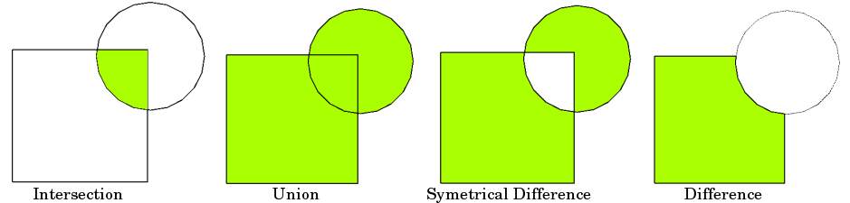

import pandas as pd
import geopandas as gpd
import matplotlib.pyplot as pltSpatial data processing
Spatial data processing (or geoprocessing) is the use of tools and functions to analyze and manipulate geographic data, often to create new data or information.
It’s like doing applied math on map data — combining, measuring, or filtering spatial data to get new information. Here are a couple of examples:
- Buffer: Creating a zone around a feature, like drawing a 1km area around a school.
- Clip: Cutting one layer by the shape of another, like trimming land-use data to the boundary of a city.
These help answer spatial questions like “What’s within walking distance?” or “How much green-space is inside this area?” or “How many libraries are in each neighbourhood?”
There are many ways to interact with spatial data - ranging from getting geometric points from addresses, to intersecting a different spatial datasets. In this notebook, we’ll cover a number of commonly used spatial data processing functions.
We’ll show the examples using geopandas, however every one of these examples can easily be done in GIS software and many other libraries for working with spatial data.
Let’s remind ourselves of some key concepts to start with. For a broader overview, check out our notebook on Spatial data and GIS
First, there are two major types of spatial data. - Vector data represents geographic features as discrete points, lines, and polygons, making it ideal for boundaries, roads, or point locations like cities. - Raster data stores information in a grid of pixels (cells), often used for continuous data like elevation models or satellite imagery.
In this notebook, we’ll mostly be working with vector data, which consists of three common types of geometry. 1. Points are zero-dimensional coordinates (e.g., a library’s latitude/longitude). 2. Lines are one-dimensional sequences of points (e.g., rivers, roads, or transit routes). 3. Polygons are two-dimensional enclosed shapes (e.g., political boundaries, lakes, or census tracts).
These can be projected into different Coordinate Reference Systems (CRS), which define how spatial data maps to the Earth’s surface. For example, WGS84 (EPSG:4326) is common for global latitude/longitude coordinates, while UTM zones (e.g., EPSG:32617) minimize distortion for local measurements.
Choosing the right CRS ensures accurate distances, areas, and spatial relationships.
When we are comparing and relating multiple spatial datasets to each other, we have to ensure that they are in the same CRS.
In order to process spatial data we will be working with three datasets today (you can also download them by clicking on the link): - Toronto Public Libraries (TPL) branches (tpl-branch-general-information-2023.csv), which contains information about each of the libraries in the TPL - Toronto’s wards (city-wards.gpkg), each of which have a city councillor - Toronto’s regions (toronto-regions.gpkg), which are the former municipalities that were amalgamated in 1998 to make modern Toronto
df_tpl = pd.read_csv('./data/tpl-branch-general-information-2023.csv')
gdf_wards = gpd.read_file('./data/city-wards.gpkg')
gdf_regions = gpd.read_file('./data/toronto-regions.gpkg')Geocoding
Geocoding converts addresses (e.g. "100 Queen St, Toronto, ON M5H 2N2") into geographic coordinates (e.g. [-79.3840, 43.6536]) that can be plotted on a map and analyzed in GIS or Python.
Of course we can simply input the the string for an address into Google Map, search for it, and manually record the coordinate location. However, this wouldn’t be practical if we had a big list of addresses. Let’s take a the .csv data that we loaded for library locations. There are 112 in Toronto!
df_tpl[["BranchName","Address"]]A geocoding function, either in Python or GIS, typically relies on an external geocoder, a service that turns addresses or place names into map coordinates. Large companies like Google, Apple, and Mapbox provide geocoding services. However, these require an API key and often have a tiered pricing model. There are free tools as well, for example Nominatim which queries OpenStreetMap’s database. This is what we will use in this notebook.
In GeoPandas, the function for geocoding is geopandas.tools.geocode(). This transforms a DataFrame of addresses into a GeoDataFrame with Point geometries, enabling spatial analysis.
Free geocoding services usually allow about one query per second - since we have over 100 library branches, you’ll have to wait a little bit! :)
gdf_tpl = gpd.tools.geocode(
df_tpl["Address"],
provider="nominatim",
user_agent="tpl-workshop",
timeout=10
)
# Add in and fix columns
gdf_tpl['Address'] = df_tpl['Address']
gdf_tpl['BranchName'] = df_tpl['BranchName']
gdf_tpl = gdf_tpl.drop(columns=['address'])
gdf_tpl = gdf_tpl.to_crs(4326)## In case you don't want to run and wait for the geocoding to work, we've precomputed it and you can load
gdf_tpl = gpd.read_file('./data/tpl.gpkg')gdf_tpl.head()Great! now we can map and analyze this data relative to other spatial data
Buffer
Buffers create zones around geometries at a specified distance
For example, if we wanted to map the area that is within 1km of the nearest library, we would compute a buffer with the point locations of libraries as the input using the function .buffer(N) (or accompanying methods in QGIS).
Buffers can be super useful on their own, but they can also be important steps in analyses. For example, you could take buffers of library locations and then count the number of households within each buffer.
Try running the code below to compute buffers for library locations, you can also test different buffer distances! :)
# converts to UTM Zone 17, which is in metres
gdf_tpl = gdf_tpl.to_crs("EPSG:32617")
# generate buffer at 1km (1000m)
gdf_tpl["buffer_1km"] = gdf_tpl.buffer(1000)Great! let’s see what this looks like
# Compare the wards and their center points
ax = gdf_wards.plot(alpha=0.25, edgecolor='black', color="pink", linewidth=1)
gdf_tpl.set_geometry("buffer_1km").plot(ax=ax, color="lightblue", edgecolor="blue")Dissolve
Dissolve merges multiple features into one, either based on a shared attribute or as a single unified shape.
You might have noticed that many of the buffered library polygons overlapped each other. We can use the method .dissolve() from geopandas, to combine all into a single polygon.
gdf_tpl_dissolved = gdf_tpl.set_geometry("buffer_1km").dissolve()Let’s plot it! Notice how all buffers that were overlapping are now merged into one much larger geometry
ax = gdf_wards.plot(alpha=0.25, edgecolor='black', color="pink", linewidth=1)
gdf_tpl_dissolved.plot(ax=ax, color="lightblue", edgecolor="blue")Great! having this as one geometry can be useful for quick question like asking how much of the city (in terms of area) is within 1km of a public library. If we did this calculation on just the buffered polygon, we would be double counting areas of overlap.
# computing area of the dissolved polygon, dividing to covert to km2
gdf_tpl_dissolved.buffer_1km.area / (1000 * 1000)Centroids
Centroids are the geometric center point of polygons
Computing centroids is useful for urban analyses because it gives a single representative point for each area, which is helpful for labeling, spatial joins, spatial selections, or other further processing of spatial data. For example, we could compute the centroid of each ward in Toronto, and then try to find the closest hospital to each.
In geopandas we can use the method .centroid to return a Point geometry for each feature. Here’s a quick example of finding the centroids of Toronto wards
# Convert to UTM Zone 17N (meters)
gdf_wards = gdf_wards.to_crs("EPSG:32617")
# Compute centroids (as Point geometries)
gdf_wards["centroid"] = gdf_wards.centroid
# Compare the wards and their center points
ax = gdf_wards.plot(alpha=0.25, edgecolor='black', color="pink", linewidth=1)
gdf_wards.set_geometry("centroid").plot(ax=ax, color="purple", markersize=10)Spatial Selections
Spatial selections, or spatial queries, are ways we can filter datasets based on their locations relative to other spatial features and datasets.
This can have a wide variety of applications. For example, you can filter …
- Library locations that are within a neighbourhood
- Schools that are within a set distance of an expressway
- Streets that cross railroad tracks
- Parks that contain baseball fields
- And more!
Let’s try the first example, libraries that are within a neighbourhood.
Let’s load in the data, and convert to a common CRS so the data can be related to each other accurately.
gdf_tpl = gpd.read_file('./data/tpl.gpkg').to_crs("EPSG:32617")
gdf_regions = gpd.read_file('./data/toronto-regions.gpkg').to_crs("EPSG:32617") The gdf_regions are the 6 former municipalities of Toronto prior to amalgamation.
gdf_regionsLets try to query our dataset of public library locations to find only those within SCARBOROUGH, via .intersects
# Get Scarborough's polygon from regions
scarborough = gdf_regions[gdf_regions["REGION_NAME"] == "SCARBOROUGH"].geometry.iloc[0]
# filter the library dataset via a spatial selection, specifically .intersects
gdf_tpl[gdf_tpl.intersects(scarborough)]If we wanted to simply count the number of libraries in Scarborough, we can do that too!
len(gdf_tpl[gdf_tpl.intersects(scarborough)]).intersects is just one of several spatial selection methods. Here’s a list of several options in .geopandas. QGIS and other GIS software all have the same options, but they might just have different names.
| Method | Description | Docs |
|---|---|---|
intersects() |
Returns True if geometries intersect |
intersects |
contains() |
True if geometry completely contains the other |
contains |
within() |
True if geometry is within another |
within |
crosses() |
True if geometry crosses the other |
crosses |
overlaps() |
True if geometries partially overlap |
overlaps |
touches() |
True if geometries touch at boundary only |
touches |
equals() |
True if geometries are exactly equal |
equals |
disjoint() |
True if geometries have no overlap at all |
disjoint |
covers() |
True if geometry covers the other |
covers |
covered_by() |
True if geometry is covered by the other |
covered_by |
distance() |
Returns distance to the other geometry | distance |
Spatial Joins
Spatial joins combine data from two spatial datasets based their spatial (i.e. geographic) relationship, allowing you to connect attributes from different layers. This is similar to a table join, but instead of joining data based tabular data (e.g. matching ID columns), we are joining data based on spatial relationships.
For example, you can match points (libraries) to polygons (wards) to see which administrative district contains each facility. And further, count how many libraries are in each.
This is similar to doing spatial selections and queries, but instead of filtering one of our input datasets, we are creating a new dataset.
crs = "EPSG:32617"
gdf_tpl = gpd.read_file('./data/tpl.gpkg').to_crs(crs)
gdf_regions = gpd.read_file('./data/toronto-regions.gpkg').to_crs(crs) Great! let’s begin by trying to join region names to library locations.
We can do this using the geopandas method .sjoin() (see similar documentation for QGIS).
gdf_tpl_with_regions = gpd.sjoin(
gdf_tpl,
gdf_regions[['REGION_NAME', 'geometry']],
how='left',
predicate='within'
)
gdf_tpl_with_regions.head()The parameter predicate= can be one of several options for spatial relationship noted in the above section (e.g. .intersects, .within, .crosses, etc.). The parameter how= is for the type of joing (e.g. left, inner, right, etc.)
View more in the geopandas documentation page for spatial joins.
Doing a spatial join can then lead to a range of subsequent analyses, for example counting the number of libraries in each region. If you had numeric data, for example the number of books in each branch, the following count be expanded to compute sum, mean, etc. for each group.
gdf_tpl_with_regions.groupby('REGION_NAME').size()Overlay Operations
*Overlay** operations take two spatial datasets and produce a new one based on the spatial relationships between their geometries.
| Operation | Description |
|---|---|
intersection |
Finds only the overlapping areas between two layers |
union |
Merges all geometries from both layers into a single combined shape |
symmetric_difference |
Keeps geometry that is in either layer but not both |
difference |
Extracts parts of the first layer that are not covered by the second |
The image below is adapted from the full tutorial in geopandas on this topic which you can look at for more details. QGIS also has similar functions available.
!
In geopandas these operations are performed using gpd.overlay()
Let’s take a look at quick example, trying to find the portions of wards in Toronto that overlap with the Old Toronto region area.
crs = 32617
gdf_wards = gpd.read_file('./data/city-wards.gpkg').to_crs(crs)
gdf_regions = gpd.read_file('./data/toronto-regions.gpkg').to_crs(crs)# Get Old Toronto polygon
old_toronto = gdf_regions[gdf_regions["REGION_NAME"] == "TORONTO"]
# Find intersecting wards
intersection = gpd.overlay(gdf_wards, old_toronto, how="intersection", keep_geom_type=False)
intersection.plot()This has returned the portions of wards that overlaped with the Old Toronto polygon.
By overlaying all the wards, we can see below that the orange area has been cut out
ax = gdf_wards.plot(alpha=0.5, edgecolor='white', color="pink", linewidth=1)
intersection.plot(ax=ax, edgecolor='white', color="orange", linewidth=1)
gdf_wards.plot(ax=ax, edgecolor='blue', color="none", linewidth=1)